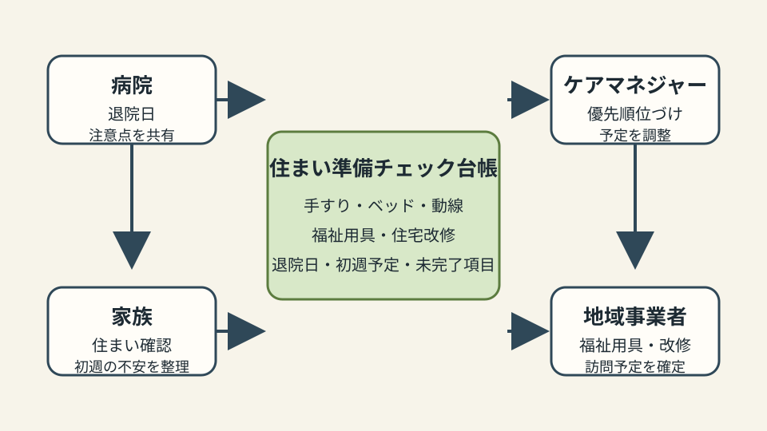

Question Note
退院後の住まい準備の抜け漏れを埋める小規模サービス案

全体像
高齢者が住み慣れた地域で暮らし続けるには、医療、介護、住まい、生活支援が切れずにつながる必要があります。課題は制度そのものではなく、退院が決まってから自宅に戻るまでの短い期間に、家族、病院、ケアマネジャー、福祉用具事業者、住宅改修業者の確認が散ることです。
狙いは、社会課題全体を解くことではなく、退院前後2週間の住まい準備チェックと引き継ぎに絞ることです。
どの社会問題を切り出すか
| 現場課題 | 何が起きるか | 既存手段の限界 |
|---|---|---|
| 退院日が先に決まる | 手すり、ベッド位置、段差、トイレ動線の確認が後追いになる。 | 電話と紙メモでは、誰が何を確認済みか一覧しにくい。 |
| 家族の不安が具体化しない | 初週の食事、服薬、入浴、通院付き添いが直前に不足する。 | 一般的なチェックリストは家庭ごとの優先度に落ちにくい。 |
| 事業者の手配が分断される | 福祉用具、住宅改修、訪問サービスの予定が重なったり空いたりする。 | 各事業者の予定は個別管理で、家族向けの見通しが作りにくい。 |
サービス案
退院予定日を起点に、自宅確認、必要物品、事業者手配、初週の見守り予定を一枚の軽い台帳にまとめるサービスです。
- 退院予定日、要介護度見込み、主な注意点、家族連絡先を最小限で登録する。
- 玄関、寝室、トイレ、浴室、服薬置き場を写真付きで確認する。
- 福祉用具、住宅改修、訪問予定、買い物・食事支援を期日別に並べる。
- 家族向けに「退院前」「退院日」「初週」の確認リストを出す。
- 完了写真、未対応項目、担当者メモを月次レポートとして残す。
100万円規模に抑えた市場設定
初年度は1市内の地域包括支援センター、居宅介護支援事業所、小規模病院を合わせた30拠点を到達可能市場とし、その中から15拠点に導入する前提にします。
| 項目 | 仮定 | 結果 |
|---|---|---|
| 到達可能市場 | 1市内30拠点 | 説明会と個別設定を1人で回せる範囲 |
| 初年度導入 | 15拠点 | 地域包括、居宅、病院相談室から獲得 |
| 月額利用料 | 5,000円 | 900,000円/年 |
| 導入支援 | 12,000円 x 8件 | 96,000円 |
| 初年度売上予想 | 合計 | 996,000円 |
収益モデル
- 基本: 相談拠点または居宅介護支援事業所ごとの月額利用料
- 追加: 初期項目設計、既存チェック表の移行、事業者リスト整備
- 追加: 家族向け説明資料と運用研修の作成
初期は成功報酬ではなく、退院調整の抜け漏れと電話確認を減らす固定課金の方が導入判断しやすいです。
必要なシステム要件と支出
| 領域 | 要件・使い道 | 年額の目安 |
|---|---|---|
| フロント | スマホで写真登録、チェック、家族向け一覧を確認 | 0円〜 |
| バックエンド | 利用者、案件、担当、期日、履歴、権限を管理 | 42,000円 |
| 通知 | メール中心。期日前の確認だけSMSを使う | 18,000円 |
| 帳票・記録 | 退院前チェック、初週予定、月次件数をPDF/CSV化 | 18,000円 |
| 運用・専門確認 | ドメイン、バックアップ、個人情報、介護現場レビュー | 82,000円 |
| 年間支出 | 合計 | 160,000円 |
AIを使った開発見積もり
AIを使うと、画面案、CRUD、チェックリスト、PDF出力、テストデータ、家族向け説明文の初稿を短縮できます。一方で、退院調整の責任範囲、個人情報、医療・介護職の確認項目は人が検証する必要があります。
| 作業 | AIで短縮できること | 目安 |
|---|---|---|
| 要件整理 | ヒアリングメモから退院前後の業務フローを整理 | 4〜6日 |
| プロトタイプ | 案件一覧、チェック、写真、期日管理のたたき台を作成 | 1〜2週間 |
| 本実装 | 権限、通知、帳票、監査ログ、テストデータを補助 | 3〜4週間 |
| 検証・修正 | 職種別の表示項目と入力負荷を確認 | 1〜2週間 |
1人開発でも、初期版は6〜9週間で作れる想定です。
売上・支出・利益
売上 - 支出 = 利益
| 項目 | 金額 | 補足 |
|---|---|---|
| 売上 | 996,000円 | 月額5,000円 x 15拠点 x 12か月 + 導入支援96,000円 |
| 支出 | 160,000円 | ホスティング、通知、帳票、バックアップ、専門家確認 |
| 利益 | 836,000円 | 実行者の作業時間は別途。地域限定の検証として成立する水準 |
必要人数と人材要件
この規模では、実行者1名 + 単発外注を前提にします。
- 実行者: Webアプリを実装でき、医療・介護・家族の言葉を業務項目に翻訳できる人
- 補助外注: 個人情報、利用規約、介護現場レビュー、アクセシビリティ点検を単発依頼
- 望ましいスキル: CRUD実装、写真管理、帳票設計、権限設計、現場ヒアリング
リスクと最初の検証
- 医療判断や介護計画の代替に見えないよう、記録と調整に役割を限定する。
- 入力が多いと使われないため、最初は10項目以内のチェックから始める。
- 家族に見せる情報と事業者だけが見る情報を分ける。
最初は2拠点、退院予定5件だけ試し、電話確認回数、未完了項目、家族からの問い合わせが減るかを見ます。
結論
このテーマは、地域包括ケア全体を作る話ではなく、退院前後2週間の住まい準備チェックと引き継ぎに切ると、小さな事業でも現場の負担を下げやすいです。